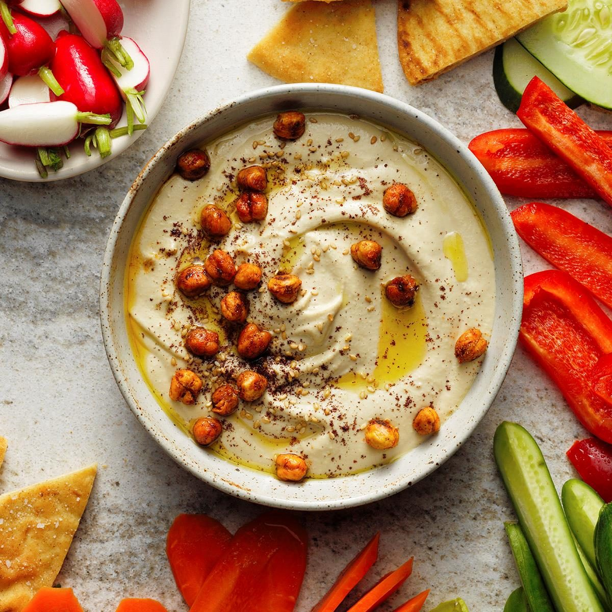

Home
Hummus

Description
Hummus is a delicious, healthy and simple dish to make yourself at home.
Originating in the Middle East, it is typically eaten as a dip with pita bread.
Hummus is a great source of fiber, vitamin B6, and several dietary minerals.
(Wikipedia)
Making this recipe can take more time initially, but when you get the hang of it
the process can be finished within 10-20 minutes. Grab your blenders, and let's begin!
Ingredients
- 1 can of chickpeas/Garbanzo beans
- 1-2 garlic cloves (or more!)
- 1/3 cup tahini paste (well stirred)
- 1/2 tsp salt
- Juice of 1 lemon
- Olive oil
- Seasonings: garlic powder, cumin, coriander
Steps
- Open can of chickpeas, drain liquid into container and rinse chickpeas under tap.
- Juice your lemon and stir tahini well before measuring it, then blend them together.
- Add chickpeas to blender little by little along with garlic cloves and seasonings.
- Blend until smooth. Taste hummus and add salt/more seasonings as needed.
- Serve with olive oil drizzled on top and a few whole chickpeas as garnish.